England > Yorkshire
PICKERING CASTLE
Pickering Castle was a motte-and-bailey castle built by the Normans as part of the suppression of Northern England. It saw little military action but was a popular location for English Kings due to the proximity of the adjacent Royal forest. It was regularly upgraded until the fourteenth century after which it was allowed to fall into ruin.
History
Gallery
Getting There
In early 1068 northern England ignited into rebellion against William I. To suppress the revolt the Normans embarked on the 'Harrying of the North', a punitive campaign during the Winter of 1069/70 aimed at destroying all farms and settlements between York and Durham. After this devastation, William seized huge swathes of territory across Yorkshire and built castles to secure the newly conquered lands. Pickering was chosen for one of these fortifications due to its strategic location with roads running north/south between Whitby and Malton and east/west between Scarborough and Northallerton. This made it a key nodal point and accordingly construction of the castle occurred in late 1069 or early 1070 whilst the Norman campaign was still underway. Although its primary role was invariably to suppress internal resistance against the Normans, it also served as an anchor against any Danish incursion and/or Scottish expansionism. The latter was particularly important as England and Scotland had yet to settle the matter of ownership of the Earldom of Northumbria.
Pickering Castle was initially an earth and timber motte-and-bailey fortification. It was raised on the eastern banks of the Pickering Beck which provided strong natural defences. The motte, which would have been topped with a wooden palisade, was surrounded by a deep ditch. To the west, sandwiched between the motte and the slope down to the beck, was the bailey which would have hosted the Great Hall and ancillary buildings. The outer bailey was located to the east.
There is no record of what role, if any, Pickering Castle played during the Anarchy, the civil war between Stephen and Matilda over the English succession. However, on the other side of Pickering Beck is an earthwork fortification known as Beacon Hill. Although yet to be precisely dated, this is generally presumed to be a siege-work dating from this conflict. The extent and outcome of the siege is unknown.
Significant modifications were made to Pickering Castle in three distinct phases during the late twelfth and early thirteenth centuries. The first of the upgrades was made by Henry II who replaced the former timber palisade on top of the motte with a stone shell keep between 1180 and 1187. He also constructed Coleman Tower, a formidable gateway into the Inner Bailey. A second phase of construction occurred between 1207 and 1210 during the reign of King John. However, it was the third phase of upgrades that was the most extensive. This was initiated in 1218 by the government of Henry III who sought to secure the north after the end of the First Barons' War. Under the direction of Geoffrey de Nevill, Sheriff of Yorkshire the curtain walls of both the Inner Bailey and the shell keep were rebuilt and strengthened although the defences of the Outer Bailey remained in timber. Geoffrey also made substantial upgrades to Scarborough Castle and York Castle at this time which, when paired with Pickering, facilitated complete control of Eastern Yorkshire.
In 1255 responsibility for maintaining Pickering Castle shifted from the Sheriff of Yorkshire to the King's Justiciar, Roger Bigod. He still had control of the castle in 1264 upon the outbreak of the Second Barons' War and prepared Pickering and Scarborough castles for action. However the death of Simon de Montfort, the rebel leader, at the Battle of Evesham (1265) defused the war and there is no record of the castle ever being attacked (although the aforementioned Beacon Hill siege-work may date from this period).
Henry III granted Pickering Castle to his younger son, Edmund Crouchback, Earl of Lancaster in 1267. When he died in 1296 the castle passed to his son, Thomas whose marriage to Alice de Lacy brought vast estates into the Earldom of Lancaster. Thomas used his power and wealth to challenge Edward II and was key in engineering the downfall of the King's favourite, Piers Gaveston. Thomas further opposed Edward when he refused to march north with him on the campaign that ended in the decisive English defeat at Bannockburn in 1314. The aftermath of that battle destabilised the north of England as Robert the Bruce of Scotland led his forces into Cumbria, Northumberland and Yorkshire attempting to force Edward II to recognise an independent Scotland. This prompted Thomas to make improvements to Pickering Castle both for defensive purposes and to make it a suitable residence for himself and his wife. However, Thomas continued to have a stormy relationship with the King and entered into open rebellion against him in 1321 only to be defeated at the Battle of Boroughbridge (1322). Edward II, keen to avenge the harsh treatment meted out to Piers Gaveston, imprisoned him at Pontefract Castle and had him executed there in March 1322. Pickering, along with all other estates of the Earldom of Lancaster, were seized by the Crown.
With war still raging between Edward II and Robert I (the Bruce) of Scotland, the latter invaded northern England again in 1322 hoping to bring the English King to terms. Pickering must have been a tempting target but bribes were paid to the Scots to leave the castle and town untouched. Nevertheless, Edward II funded upgrades to Pickering Castle and this included rebuilding the curtain walls of the outer bailey in stone.
Following the accession of Edward III in 1326, Pickering Castle was restored to the Lancastrian dynasty when Henry, brother of the executed Earl, was granted the title of Earl of Lancaster. His son, another Henry, was created Duke of Lancaster and through his daughter, Blanche, it passed by marriage to Edward III's third surviving son, John of Gaunt. His own son, Henry Bolingbroke, was exiled by Richard II and later dispossessed prompting him to invade. Passing by Pickering Castle on his way to intercept the King, he ultimately forced Richard to abdicate and took the Crown himself. The newly created Henry IV granted the Duchy of Lancaster to his son, Henry of Monmouth. When he became Henry V the Duchy reverted to the Crown albeit run as a separate entity.
The use of the castle was in decline by the late fifteenth century although it served periodically as accommodation for royalty who used the adjacent forest for hunting deer and wild boar. However, the defences were neglected and it took no part in the Wars of the Roses. By the Tudor period it was being plundered for its materials and quickly descended into ruin. Although in no fit state to be garrisoned during the seventeenth century Civil War, it was seized by Parliament after the conflict along with the rest of the Duchy of Lancaster. It was returned to Charles II upon the restoration of the monarchy in 1660 but the castle was never rebuilt and, with the exception of the chapel, it remained an abandoned ruin until taken into the care of the Office of Works in 1926.
Bibliography
Allen, R (1976). English Castles . Batsford, London.
Butler, L (1993). Pickering Castle . English Heritage, London.
Creighton, O.H (2002). Castles and Landscapes: Power, Community and Fortification in Medieval England . Equinox, Bristol.
Douglas, D.C and Greeaway, G.W (ed) (1981). English Historical Documents Vol 2 (1042-1189) . Routledge, London.
Douglas, D.C and Rothwell, H (ed) (1975). English Historical Documents Vol 3 (1189-1327) . Routledge, London.
Goodall, J (2011). The English Castle, 1066-1650 .
Gravett, C (2003). Norman Stone Castles (1) . Osprey, Oxford.
Johnson, P (2006). Castles from the Air: An Aerial Portrait of Britain's Finest Castles . Bloomsbury, London.
King, C.D.J (1983). Castellarium anglicanum: an index and bibliography of the castles in England, Wales and the Islands . Kraus International Publications.
Salter, M (2001). The Castles and Tower Houses of Yorkshire . Folly Publications, Malvern.
Williams, A and Martin, G.H (2003). Domesday Book: A Complete Translation . Viking, London.
Wright, G.N (1985). Roads and Trackways of the Yorkshire Dales . Moorland.
What's There?
Visit Official Website
Pickering Castle is a motte-and-bailey fortification with substantial remains dating from the late eleventh to fourteenth centuries. Nearby an earthwork siege castle is visible.
Pickering Castle Layout . The castle was dominated by the motte which stood at the centre of the site. The Inner Bailey was located to the north and west whilst the Outer Bailey was to the south and east.
Motte and Coleman Tower . The large motte was originally topped with a Shell Keep. Coleman Tower was added by Henry II and dominated the adjacent entry into the Inner Bailey as well as controlling access to the stairway leading to the Shell Keep.
Outer Gatehouse and Barbican . This was the site of the castle entrance since the twelfth century but the bulk of the structure seen today dates from the late fourteenth century.
Outer Bailey . The Outer Bailey as viewed from the Shell Keep. The Outer Gatehouse and Mill Tower are both visible.
Outer Bailey Towers . The last part of the castle to be rebuilt in stone was the Outer Bailey curtain wall. This upgrade was made by Edward II between 1323 and 1326 and included three towers - Mill Tower (left), Diate Hill Tower (centre) and Rosamund's Tower (right). The last included a postern gate.
Chapel . This is the castle's only surviving roofed building. It was started circa-1226 and remained in use for over three hundred years. However, by the seventeenth century it was being used as a legal court.
Coleman Tower and Staircase to Keep .
Pickering Castle is found at the north end of the town. It is well sign-posted and has a dedicated car park for visitors. Beacon Hill is not sign-posted but the site can be accessed from a public right of way that connects to Swainsea Lane. On-road car parking is possible in the vicinity.
YO18 7AX
54.249801N 0.776362W
Car Parking Option (Beacon Hill)
Swainsea Lane, YO18 8NE
54.250699N 0.785700W
Beacon Hill Siege Castle
No Postcode
54.249489N 0.784628W
(c) Copyright 2019 CastlesFortsBattles.co.uk
Recovered original photographs, plans and images
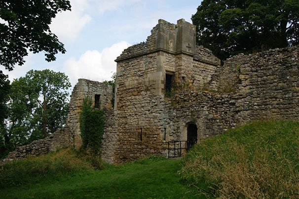
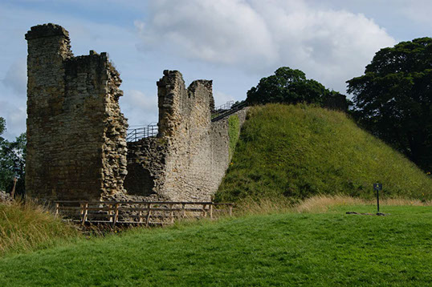
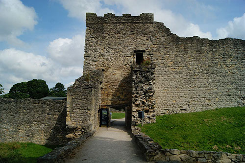
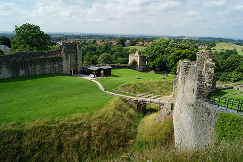
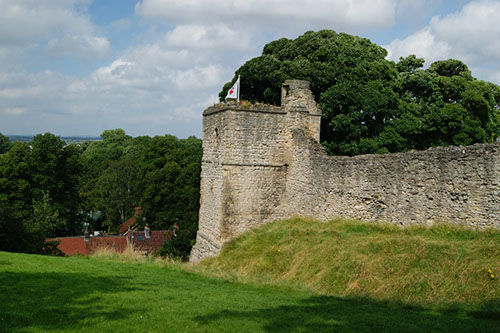
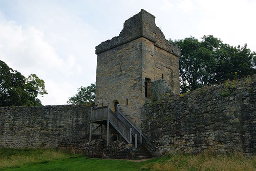
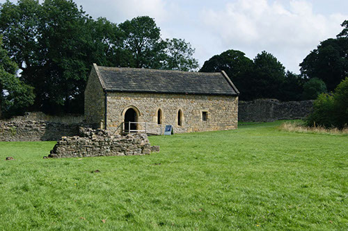
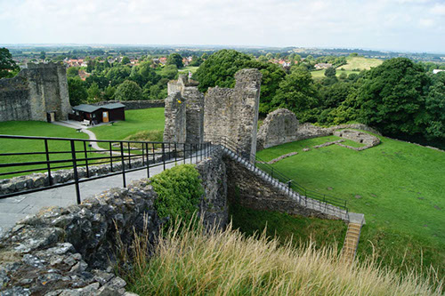
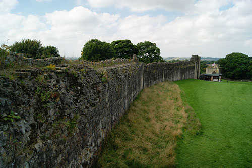
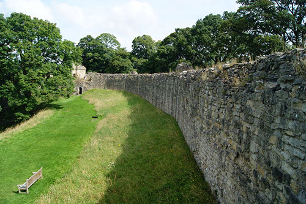
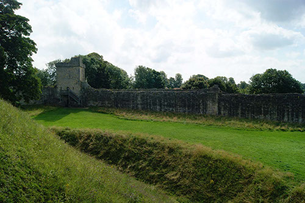
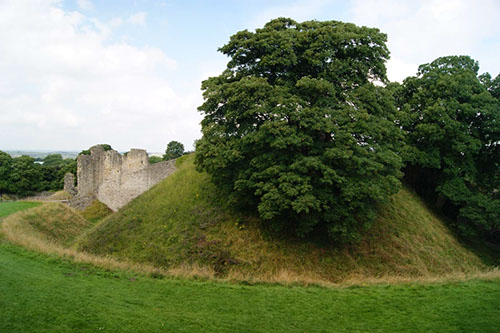
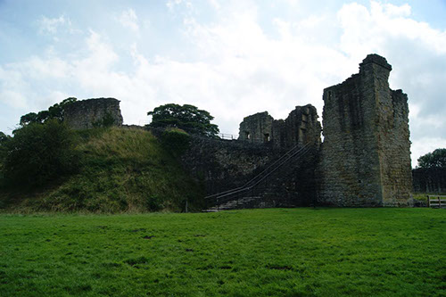
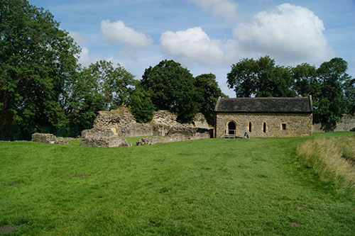
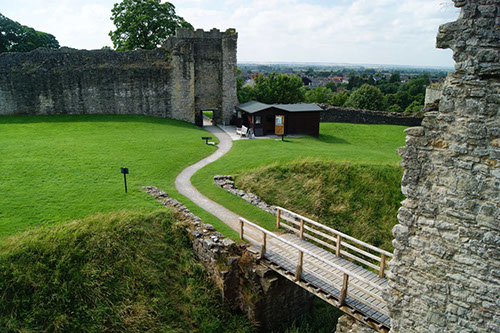
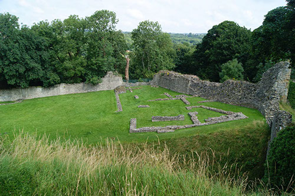
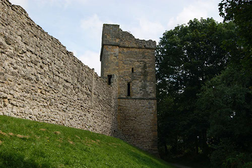
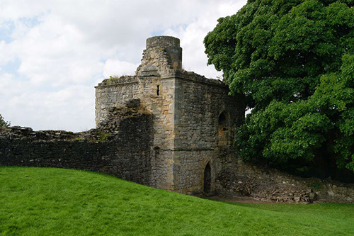